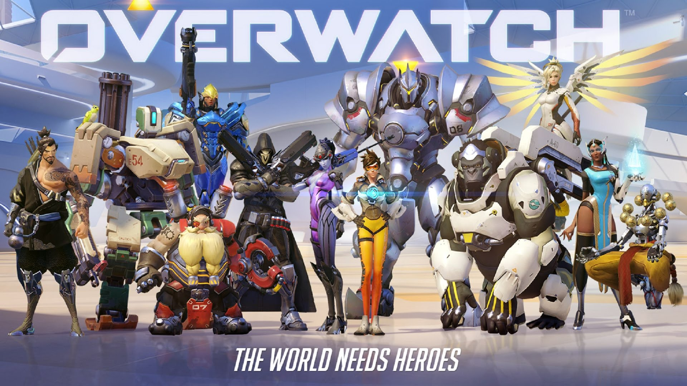
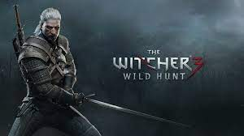

Nous allons vous présentez notre sélection des 8 meilleurs jeux de ces dernières années puis un focus sur les coups de coeur de la rédac!
Top 8 meilleurs jeux de l'année
League of Legends
League of Legends est un moba à la 3éme personne dans lequel 2 equipes de 5 s'affronte pour prendre le contrôle de la carte et détruire le Nexus adverse. Le joueur a le choix parmi de nombreux champions ayant chacun des compétences uniques.
Date de sortie initiale : 27 octobre 2009 Série : League of Legends Publieur : Riot Games Plates-formes : MAC, Windows Mode : MOBA Développeur : Riot Games Nominations : Golden Joystick Awards in 2009
Horizon Zero Dawn
Horizon Zero Dawn est un Action-RPG ambitieux dans lequel nous suivons l’histoire d’Aloy, une jeune chasseuse dans un monde dominé par les machines, qui par à l’aventure pour découvrir la vérité sur son passé. Le succès mondial de ce 1er opus a poussé les développeurs à sortir le DLC Horizon Zero Dawn : Frozen Wild peu de temps après. Un nouvel opus est maintenant en préparation Horizon Zero Dawn : Forbidden West qui nous plongera plus profondément dans cet univers fantastique.
Date de sortie initiale : 28 février 2017 sur PS4 / 7 août 2020 sur PC Série : Horizon Zero Dawn Publieur : Sony Interactive Entertainment Plates-formes : PlayStation 4, Microsoft Windows Mode : Solo RPG Développeurs : Guerrilla Games Nominations : Golden Joystick Awards in 2017
PlayerUnknown's Battlegrounds
PlayerUnknown's Battlegrounds (PUBG) est un jeu vidéo multijoueur en ligne de type battle royale développé et édité par PUBG Studios. Il est disponible en accès anticipé sur Microsoft Windows à partir du 23 mars 2017, et la version 1.0 du jeu est sortie le 20 décembre 2017. Le jeu est également disponible à partir du 12 décembre sur Xbox One dans le cadre du programme Xbox Game Preview3. Il est disponible sur PlayStation 4 depuis le 7 décembre 2018. Le 10 octobre 2019 sort PlayerUnknown’s Battlegrounds Lite, une version allégée et gratuite destinée aux joueurs possédant des performances matérielles plus basses.
Date de sortie initiale : 27 décembre 2017 Éditeurs : Krafton, Bluehole Studio, PUBG Corporation, Microsoft Studios(Xbox One),Tencent Games(mobile) et Sony Interactive Entertainment(PS4) Plates-formes : PlayStation 4, Xbox Series, Google Stadia, PlayStation 4, Xbox One, Microsoft Windows, Android et IOS Genre : Battle royale Modes : Solo, Multijoueur Développeur : PUBG Studio Nominations : The Game Award for Game of the Year(2017), The Game Award for Game of Best Multiplayer Game(2017), BAFTA Games Award for Original Property(2018)...
Hitman 3
Hitman 3 est un jeu vidéo d'action-aventure et d'infiltration développé et édité par IO Interactive, sorti le 20 janvier 2021 sur PC, PlayStation 4, PlayStation 5, Xbox One, Xbox Series. Le jeu est également jouable sur Stadia et Nintendo Switch via le cloud gaming.
Date de sortie initiale : 20 janvier 2021 Série : Hitman Éditeur : IO Interactive Plates-formes : PlayStation 4, PlayStation 5, Xbox Series, Google Stadia, PlayStation 4, Xbox One, Microsoft Windows, Android et Nintendo Switch Genres : Action-aventure, infiltration Mode : Solo Développeur : IO Interactive Nominations : The Game Award for Best VR Game(2021)...
Dead by Daylight
Dead By Daylight est un jeu compétitif asymétrique à 5 joueurs. Un des joueurs prend le rôle d'un tueur qui a pour but de sacrifier les autres joueurs appelés « survivants » pour une entité en les accrochant sur un crochet ou en les tuant grâce à ses compétences ou ses offrandes.
Date de sortie initiale : 14 juin 2016 Développeur : Behaviour Interactive Éditeurs : Behaviour Interactive, Starbreeze Studios Genre : Survival horror Plates-formes : Google Stadia, PlayStation 4, Xbox One, Microsoft Windows et Nintendo Switch Modes : Multijoueur Nominations : Canadian Videogame Award for Game of the Year(2016)...
Apex Legends
Apex Legends est un jeu vidéo de type battle royale de tir à la première personne. Au contraire de son concurrent Fortnite, le jeu invite le joueur à survivre non pas tout seul, mais dans une escouade de trois ou deux personnes elle-même opposée à dix-neuf autres ou deux fois plus en duo. Les personnages à incarner sont des figures de héros dotées de capacités propres à chacun5 : Ash, Bangalore, Bloodhound, Caustic, Crypto, Fuse, Gibraltar, Horizon, Lifeline, Loba, Mirage, Octane, Pathfinder, Rampart, Revenant, Seer, Valkyrie, Wattson, Wraith
Date de sortie initiale : 4 février 2019 Développeur : Respawn Entertainment Éditeur : Electronic Arts Réalisateur : Mackey McCandish Plates-formes : PlayStation 4, Xbox One, Microsoft Windows et Nintendo Switch Genre : Battle royale, tir à la première personne Nominations : The Game Award for Best Multiplayer Game(2019) [Winner]...
Battlefield 2042
Battlefield 2042 est un jeu vidéo de tir à la première personne développé par DICE et édité par Electronic Arts. Propulsé par le moteur Frosbite 3, le titre fait partie de la série Battlefield. Il est commercialisé le 31 octobre 2013 en Europe sur PC, PlayStation 3, Xbox 360, le 22 novembre 2013 sur Xbox One et le 29 novembre 2013 sur PlayStation 42, les consoles de huitième génération..
Date de sortie initiale : 29 Octobre 2021 Éditeur : Electronics Art Plates-formes : PlayStation 4, Xbox Series, Google Stadia, PlayStation 4, Xbox One, Microsoft Windows, Android et IOS Genre : Tie à la première personne Modes : Solo, Multijoueur Développeur : DICE
Escape from Tarkov
Escape from Tarkov est un jeu vidéo de tir tactique à la première personne créé par le studio russe Battlestate Games. Le jeu est sorti en version alpha fermée le 4 août 2016. En juin 2017, le jeu passe en bêta. Le jeu est actuellement toujours en Bêta.
Date de sortie initiale : Juin 2017 (Bêta ouverte) Développeur : Battlestate Games Éditeur : Battlestate Games Genre : Tir tacticve Plates-forme : PC Mode : Multijoueur
♥ Les coups de coeur de la rédac ♥
Yu, l'accro à l'adrenaline, à tout ce qui fait pew pew pew et aux chats, vas vous présenter sa passion : OverWatch

Junjiang, le romantique au coeur trop tendre, vous parlera d'un jeu qui l'a fait vibré : It Takes Two
Maxime, l'intrépide aventurier en quête de mystères aussi terrifiant que fabuleux, vous plongera dans un univers fascinant : The Witcher 3
Walter, passionné des jeux d'aventure du type saga va vous présenter: Resident Evil 4